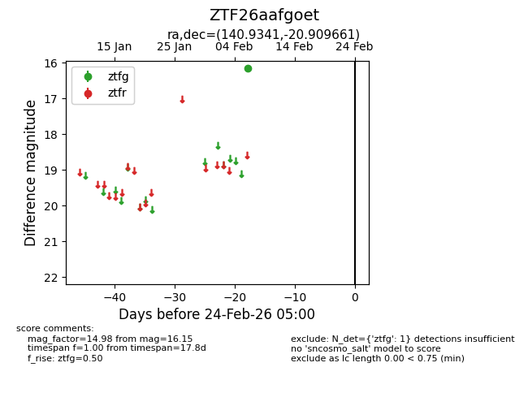
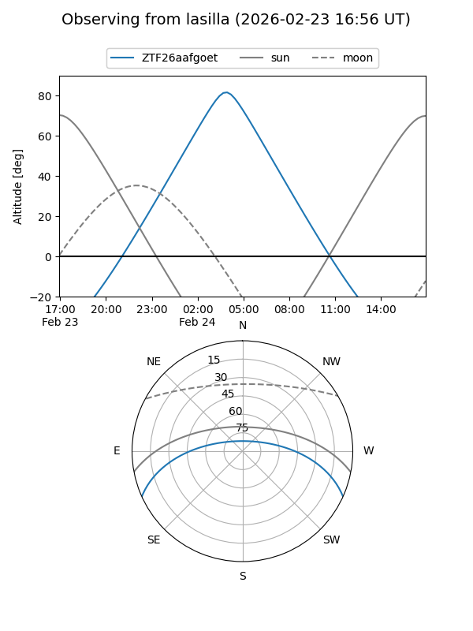
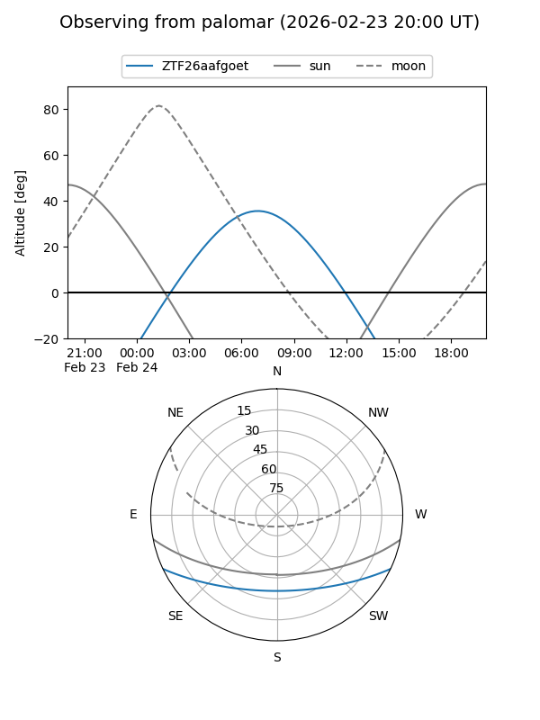

ZTF26aafgoet
Target ZTF26aafgoet at 2026-02-24 09:08
Aliases and brokers:
FINK: link
Lasair: link
ALeRCE: link
alt names
ZTF26aafgoet (ztf,fink_ztf)
Coordinates:
equatorial (ra, dec) = 140.9341,-20.90966
equatorial (HMS+DMS) = 09:23:44.19,-20:54:34.78
galactic (l, b) = (251.2107,+20.48497)
Flags:
Photometry:
last ztfg=16.15
1 ztfg detections
Lightcurve

Visibility


Additional plots